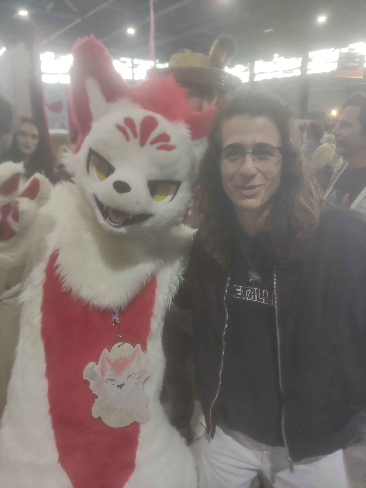

Mais qui l'aurait cru? Valentin, le seul et l'unique, qu'on a toujours cru gay, serait en réalité un fervent amateur de furrys.

Effectivement, c'est ce 11 avril, que nous avons pu apercevoir Valentin à la Geek Fest de Angers.
D'après plusieurs témoins occulaires, il aurait été vu en train de discuter avec un groupe de personnes déguisées en animaux anthropomorphes. Et il aurait même pris une photo avec eux.
L'enquête continue. Nous avons des sources. Nous avons du temps. Et surtout — nous avons une excellente mémoire.